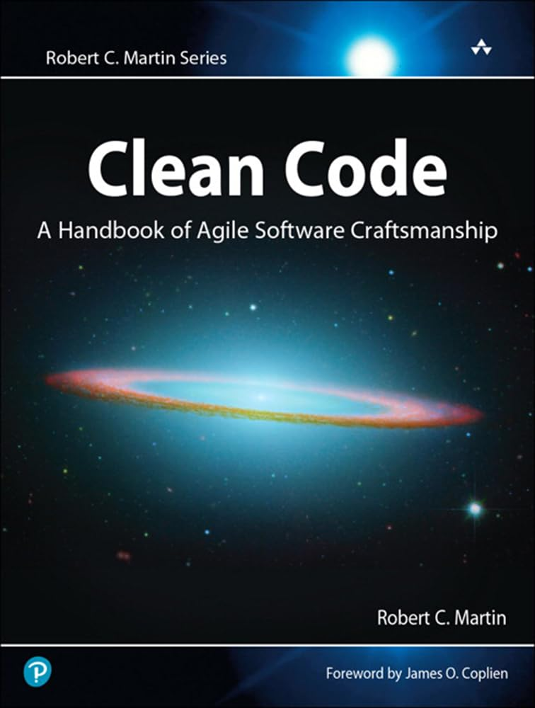
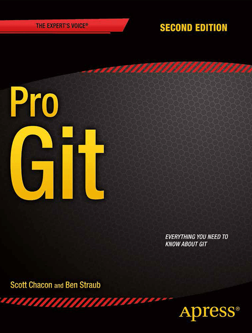
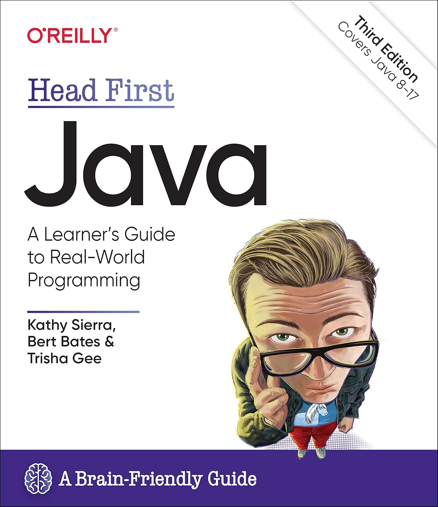
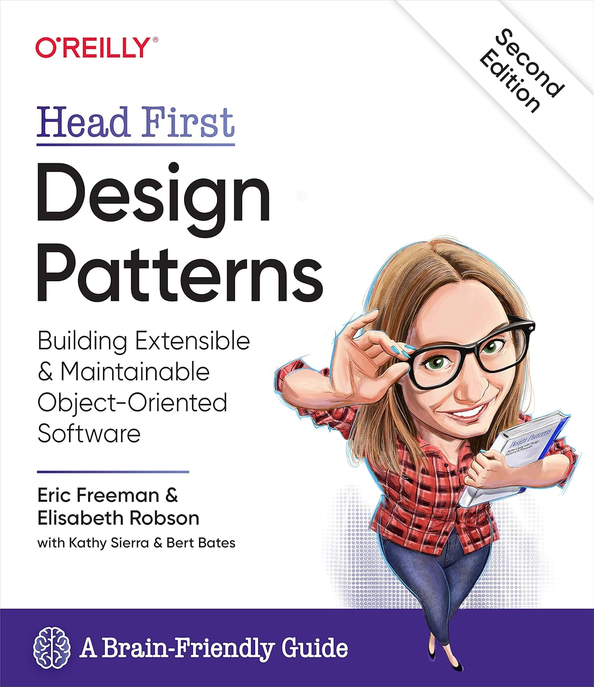
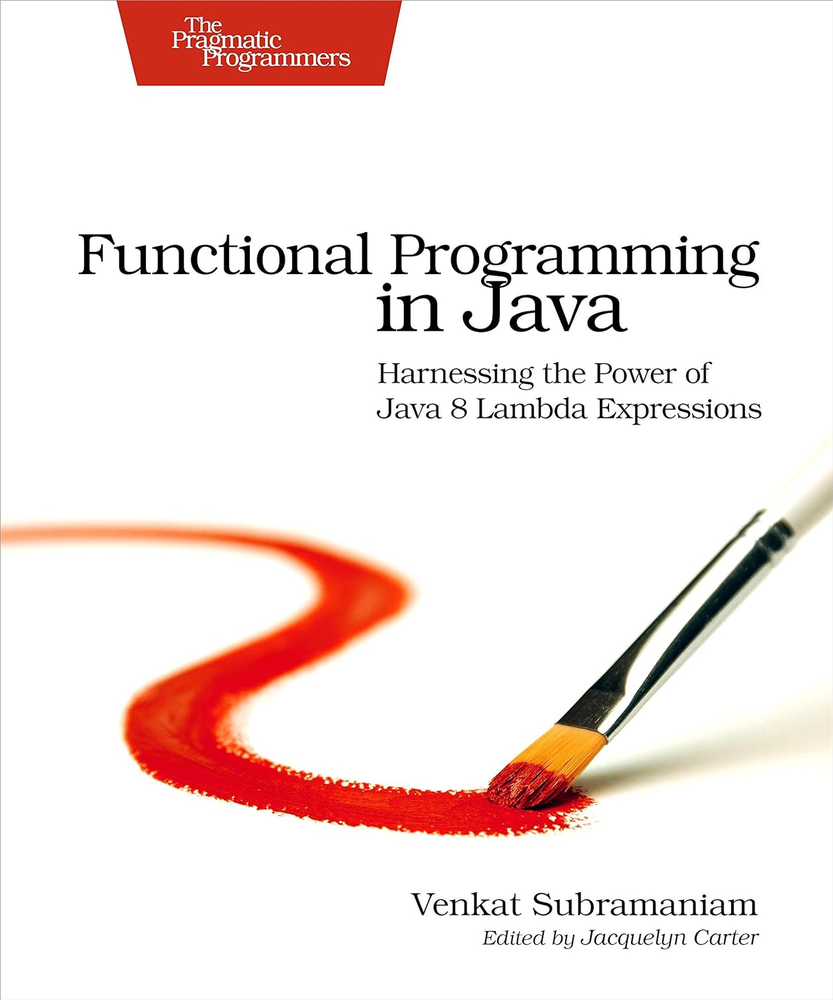

Already Read
Read & Recommended
-

Clean Code - Learn Docker in a Month of Lunches
-

Official Git User Manual - The Linux Command Line
-

Head First Java -

Head First Design Patterns -

Functional Programming in Java
On the List